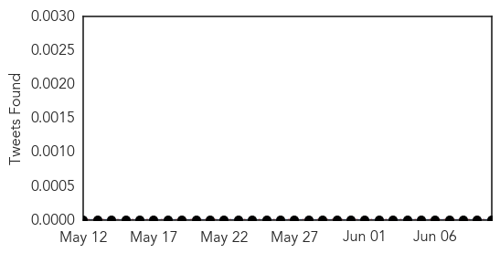
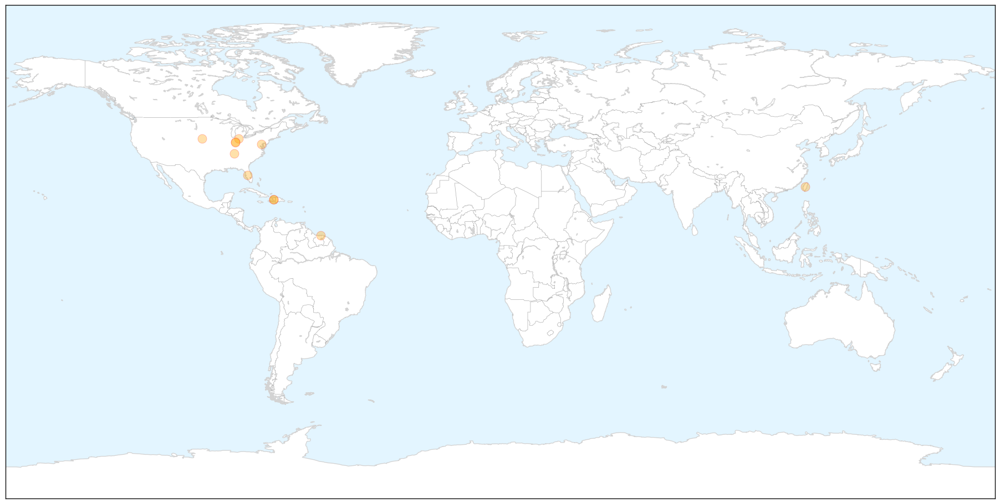

Chikungunya
30-Day Web Trend
6 alerts, 5 warnings

30-Day Twitter Trend
0 alerts, 0 warnings

Article Locations

X

Article Confidences

Top Articles:
- 0.997
- US chikungunya cases exceed 40
- 0.996
- More chikungunya cases in the United States
- 0.995
- Mosquito-borne Caribbean fever found in NE Indiana
- 0.995
- The Chikungunya virus is moving into our neighborhood
- 0.992
- Suriname reports first case of chikungunya
- 0.991
- Travelers to Caribbean warned ...｜Society｜WCT
- 0.990
- DHHS sees 1st case of rare, mosquito-borne virus
- 0.984
- Allen County Man Tests Positive For Chikungunya Virus
- 0.980
- DHHS sees 1st case of rare, mosquito-borne virus
- 0.972
- NorthFortMyersNeighbor.com, news, sports, Florida info, North Fort Myers Neighbor
- 0.916
- Mosquito experts: Take precautionary measures now
Top Tweets:
-
No tweets found for Jun 10, 2014